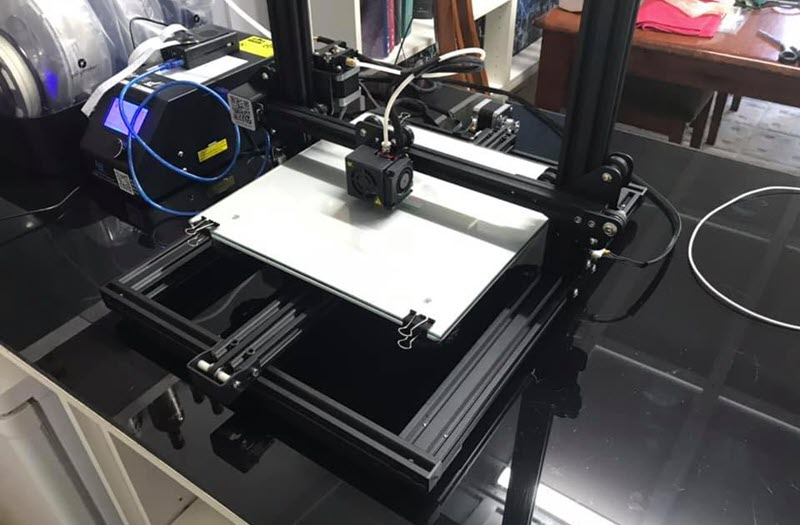

My Interest in Information Technoligy
What is your interest in IT & When did it Start?
My interest in IT has been developing for years, I first
got interested during high school when the PC I used for my
homework broke and one of my classmates taught me how to rebuild
it. From there I started building my own gaming machines and got
heavily into gaming and 3d modeling and making mods for games. I
played around with 3ds in my spare time making ship models for
games such as Freelancer and X-Wing Alliance. At school I decided
to do both my CCNA and Aries A+ which helped me get a job at my
current employer. Once I got a full-time job, I ended up doing a
lot of networking and spreadsheet work and have spent a lot of
time writing macros in excel. I haven’t had a great opportunity to
further my PC programing skills since school focusing entirely on
networking equipment and I miss making small apps and
programs.
Why did you choose RMIT??
I chose to study at
RMIT because of the positive reviews on OUA, I was looking for a
flexible way to get back into studying IT in the hope of changing
careers or furthering my job and OUA seemed a good way to do that
without leaving work. I did a lot of research while deciding if I
would go ahead and as part of that research, I found RMIT had very
positive feedback and based off of that feedback decided to
register to study at RMIT through OUA.
Why do you expect to learn??
I am hoping that
through the course of this study I can narrow down what part of IT I
would like to focus on. I have always been drawn to programing but
there are so many different languages and types of programing that I
am not across. I really hope that this course will help me gain a
better understanding of what direction I want to specialize in while
also picking up the fundamentals and a broad basic understanding of
the industry. 
Seting up a Rasberry Pi to allow for remote control my the 3D Printer over Wifi